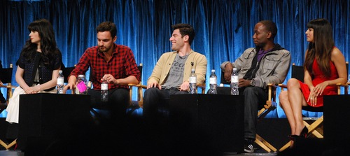
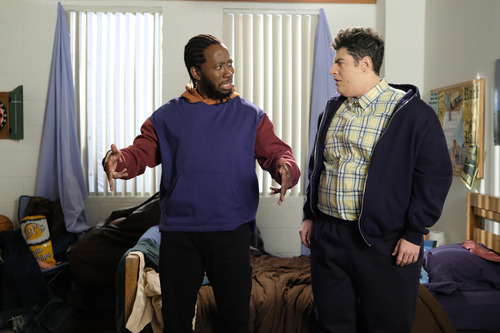
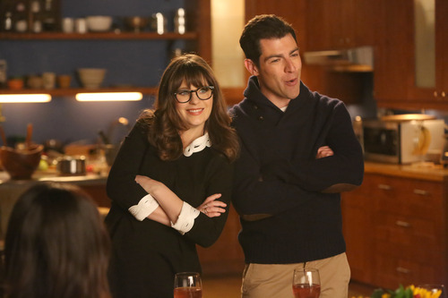

Main Cast and
Characters

| Character | Actor/Actress | Character Description |
|---|---|---|
| Jessica "Jess" Day | Zooey Deschanel | A bubbly, offbeat teacher in her early thirties who is originally from Portland, Oregon. In the premiere episode, she moves into the guys' apartment where Nick, Schmidt, and Coach help her move on from a painful break-up with her boyfriend, Spencer. She later dates Nick on-and-off eventually becoming engaged in the final season. |
| Nick Miller | Jake Johnson | Jess' roommate who works as a bartender. At the start of the series, he struggles with a break-up with his long-term girlfriend Caroline. He and Jess have an on-and-off relationship but ultimately end up together. |
| Winston Schmidt | Max Greenfield | Jess' roommate, a seemingly confident ladies' man. He is a successful marketing associate in a female-dominated office. He dates Cece in the earlier seasons but this ends after he cheats on her. However they later reunite and marry and have a child, Ruth. |
| Winston Bishop | Lamorne Morris | A former basketball player and Nick's childhood friend from Chicago. Losing his post as point guard for a team in the Latvian Basketball League, he returns to America and moves back into the guys' apartment in the second episode. He later becomes a cop and meets his wife on the force. He is very close to his cat and sometimes is mocked for this. |
| Cecilia "Cece" Parikh | Hannah Simone | A fashion model and Jess' best friend since childhood. In spite of their differences, Cece is a very loyal and protective friend to Jess. Initially skeptical of Jess' new roommates, Cece becomes interested in Schmidt and integrates herself more and more socially with the others as time progresses. |
| Ernie Tagliaboo, aka Coach | Damon Wayans Jr. | A cocky and driven former athlete who works as a personal trainer. He appears briefly in the "Pilot" episode as a roommate but has left in the second episode. After a break-up with his girlfriend, Coach returns to the loft two years later and reintegrates himself back into the lives of his former roommates becoming a coach at the middle school Jess teaches at. |
| Reagan Lucas | Megan Fox | A gorgeous, no-nonsense bisexual pharmaceutical sales rep, first appearing in season 5 when she comes to town on business and shakes things up in the loft as the new "new girl" when she rents out Jess' room while the latter is sequestered on jury duty (during Zooey Deschanel's parental leave). She knows Cece (the first woman she slept with) from a previous gig they did together. |
Production
Conception
20th Century Fox Television first approached playwright Elizabeth Meriwether in 2008 to develop a pilot that was eventually shelved. After Meriwether's success with the 2011 romantic comedy film No Strings Attached, 20th Century Fox approached her once more, and she pitched an idea for a TV sitcom about an "offbeat girl moving in with three single guys", inspired by her experience of "bouncing from Craigslist sublet to Craigslist sublet, for four years in L.A." when she was in her twenties. This show was initially called Chicks and Dicks, and two of the characters were already similar to the final characters of Jess and Schmidt. The initial idea was a Will & Grace-style comedy inspired by Meriwether's close friendship with a guy after their exes started dating each other. The FOX network liked the script and pursued Zooey Deschanel for the role of Jess, to whose story Meriwether felt most connected. As the script developed, the plot moved on from being about the sexual endeavors of the roommates and became more socially oriented, so the title was changed to New Girl.
Casting
Movie actress and singer-songwriter Zooey Deschanel was in the process of developing an HBO show when she read the New Girl pilot script and responded to the material. The character of Jess was not specifically written for Deschanel, but the producers found it a great match and needed little fine-tuning. With the support from Fox, Meriwether wanted to make Jess a unique, interesting and funny female character that would have been the side character on other shows. Deschanel became a producer on the show and helped build the character, requesting to not play the classic wife character who would be ignored by the guys she tries to keep out of trouble. Meriwether's goal was to write about herself from an honest perspective, with Jess mirroring her at the start and later Deschanel until Jess turned into a "hybrid of me and Zooey, the writers, and the editor". Deschanel described Jess as a part of her, especially with regard to "the sort of enthusiasm and optimism" of her youth. She does not shy away from playing embarrassing scenes or being unattractive. As Kasdan said, "This show advocates for the attractive dork." Although Meriwether had always imagined the show as an ensemble show, Fox would later focus its first marketing push on Zooey Deschanel and gave the show the promotional tagline "Simply Adorkable."